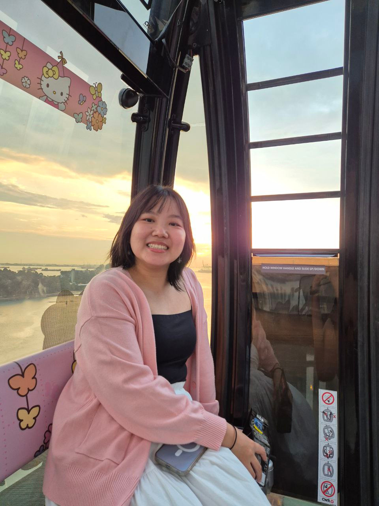

Guardians of the Lonely Departed
A short film about Tommy Yu, who honours elders by performing their last rites when no one else will.
I'm a
I bring stories to life through video, audio and design, creating engaging content for digital and social platforms.

My name is Minh and I'm a multimedia designer with expertise in video production, audio editing, and graphic design.
Passionate about storytelling and visual communication, I bring ideas to life through engaging content for digital and social platforms. With a growth mindset, I'm constantly improving my skills and keeping up with social media trends.
Human stories first
Always learning
Care in every detail
Across media and formats
Creative production and technical skills across video, audio, photography, and design.
Multimedia production, brand storytelling, and visual design experience.
Singapore University of Social Sciences
Photography Major, Temasek Polytechnic
Singapore University of Social Sciences
Singapore University of Social Sciences
Explore selected work in video, podcasting, photography, and design.
A short film about Tommy Yu, who honours elders by performing their last rites when no one else will.
Insurance education videos for working adults aged 25 to 35, produced from discussion points through filming and editing.
Personal stories of client-facing team members, developed through interviews, scripts, set design and production.
Conversations with external guests about their journeys and what living the good life means to them.
A podcast that grew from audio-only episodes into video, studio recordings, graphics and short-form reels.
A fictional fantasy screen with a floating island, warships and an ethereal atmosphere.
An accessible layout for technical investment content that prioritises clarity and easy downloading.
Have a project, opportunity, or story to tell? Let's connect.
Reach out about multimedia production, design, and collaborations.
Singapore
From an initial idea to the final edit, I work across video, audio, and visual storytelling. Send me an email and tell me what you're creating.
You can also explore my portfolio PDF before getting in touch.